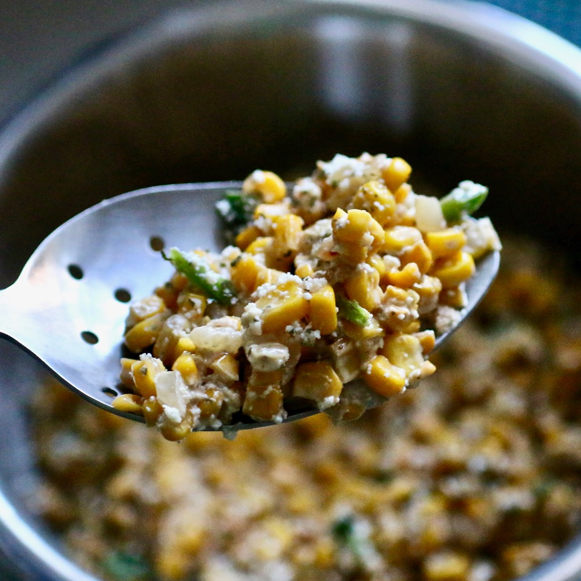

Spiced Street Corn Salad

Description
On long summer days my family and myself used to take long walks on the beach. We would always stop at this food stand that would be on the path and buy some of their Spiced Street Corn Salad. Eventually the place closed down so I purchased the recipe off of the internet to share with you guys.
Ingredients:
- 2 tablespoons vegetable oil
- 4 cups fresh sweet corn kernels
- 1/2 medium white onion, chopped
- 3 cloves garlic, minced
- 1 small jalapeno pepper, seeded and minced
- 3 1/2 cups crumbled cotija cheese, divided
- 2 tablespoons mayonnaise
- 2 medium limes, juiced
- 1/4 teaspoons cayenne pepper
- sea salt to taste
- 2 tablespoons chopped cilantro
Directions:
- Heat oil n a large cast iron skillet over medium heat until sizzling. Add corn and cook, stirring occasionally, until the corn is toasted and golden brown, 15 to 20 minutes. Add onion and garlic and cook foor another 30 seconds. Remove from the heat and allow to cool, 10 too 15 minutes.
- Mix corn mixture, jalapeno, 3 tablespoons cotija cheese, mayonnaise, lime juice, cayenne, and salt together in a mixing bowl. Adjust seasonings, adding more of your preferred flavors if desired. Top with remaning cotija cheese and cilantro.